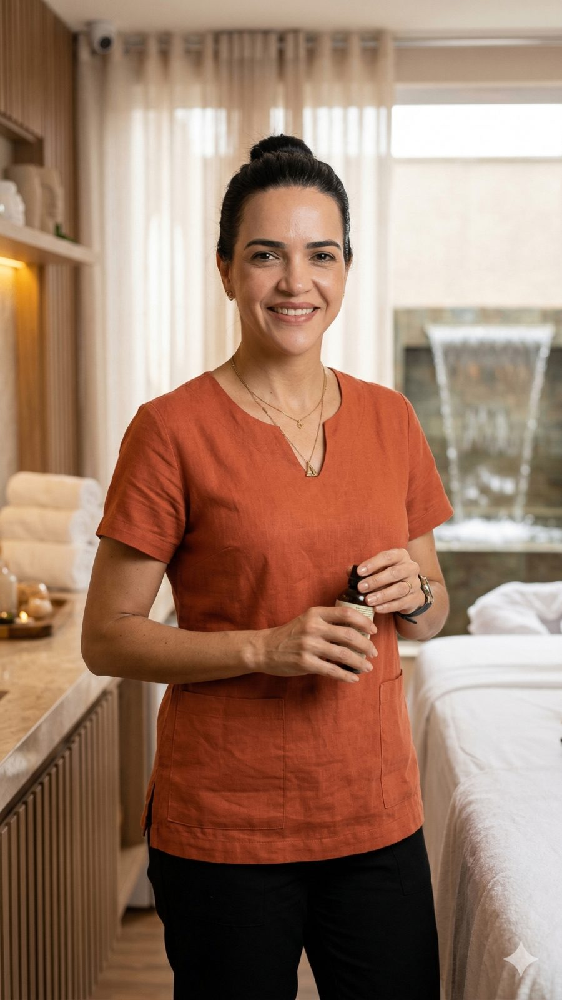
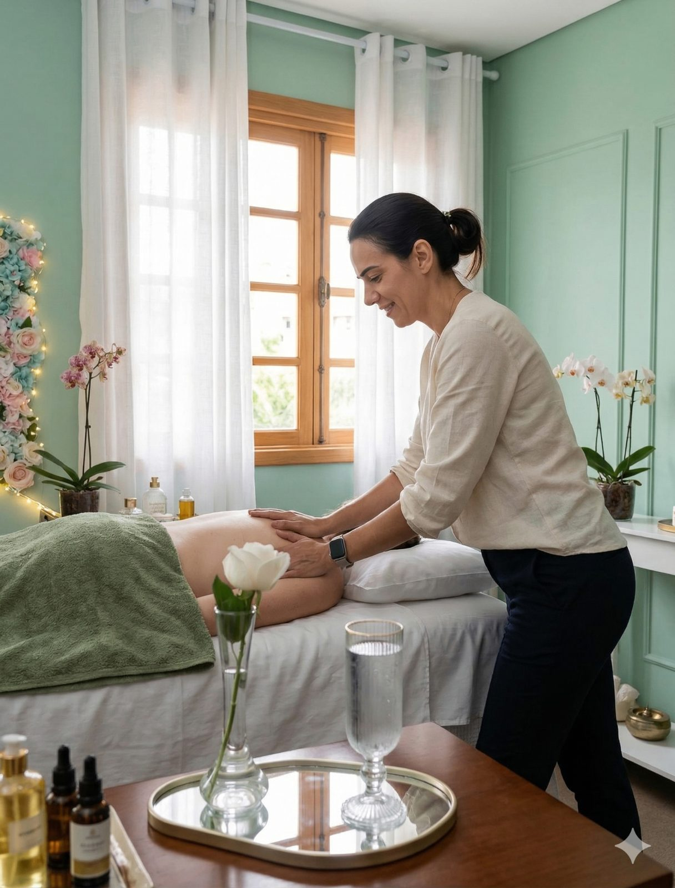
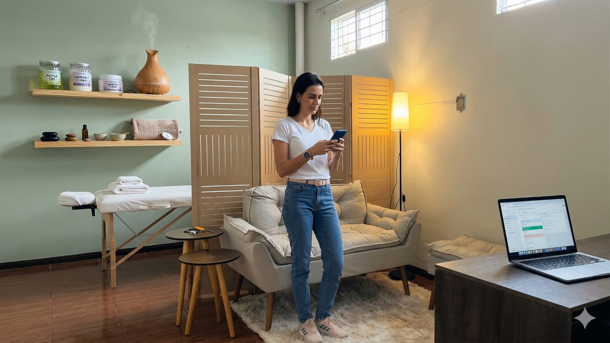
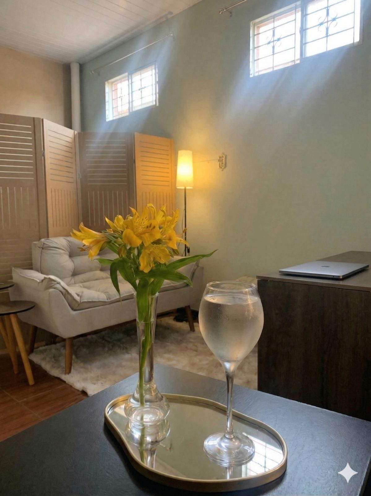

Relaxamento profundo, cuidado corporal e um espaço seguro onde você escolhe: falar tudo o que pesa ou ficar em silêncio. Seu corpo faz a conversa.

Minha trajetória é feita de superação, e foi nela que aprendi o valor de ser cuidada de verdade. Desde então, não parei de estudar: cada técnica nova me mostrou que o corpo e a mente conversam o tempo todo.
Por isso vejo a massagem como uma conexão entre corpo e mente. Além do alívio muscular, existe o alívio de ser ouvida sem julgamento, sem pressa, e no seu próprio ritmo.
No meu estúdio, em Congonhas, você encontra presença, cuidado e transformação. Atuo como terapeuta corporal. Não faço psicoterapia nem diagnósticos, e encaminho com carinho quando você precisa de mais.
Do alívio muscular profundo à nova sessão que une toque e escuta.

Massagem somato-emocional integrativa de 75 a 90 minutos. Toque profundo, respiração guiada e escuta acolhedora, de orientação psicanalítica, para soltar o corpo e o peso da semana.
Percussão profunda para alívio muscular, recuperação esportiva e performance física masculina.
Pedras aquecidas para tensões profundas, circulação e relaxamento.
Técnicas para emagrecimento e modelagem corporal feminina.
Combina múltiplas técnicas para um relaxamento completo. Pode ser feita também no Modo Silêncio.
Corpo e escuta no mesmo cuidado. Você escolhe como quer ser cuidada(o), e pode mudar de ideia no meio da sessão.
Você não precisa dizer nada.
A mesma massagem profunda, com ritmo mais lento, respiração guiada e presença. Eu observo o que o seu corpo mostra e falo apenas o essencial. O corpo faz a conversa.
Você pode colocar para fora, sem julgamento.
Enquanto o corpo é tocado, a mente pode falar. Eu escuto com atenção, faço poucas perguntas e deixo o silêncio trabalhar. Nada do que você disser sai desta sala.
Toque em uma região. São pistas e perguntas, não diagnósticos: cada corpo conta a sua própria história.
Toque nos círculos numerados do mapa para conhecer as pistas e a pergunta de abertura que uso na sessão.
Dor persistente deve ser avaliada por médico ou fisioterapeuta. A sessão complementa, não substitui.
Pistola e ferramentas de última geração, com técnica manual de precisão.
Tratamentos adaptados a emagrecimento, recuperação muscular, relaxamento ou descompressão emocional.
Acolhimento sem julgamento, sigilo total e encaminhamento a psicólogos quando necessário. Eu cuido do corpo e respeito o seu tempo.
Terapeuta experiente, com excelência e discrição.

Estúdio Marciene Mendes, ambiente acolhedor
Uma experiência transformadora. Saí com uma sensação de renovação e de paz.
Lucas Silva, EmpresárioAmbiente acolhedor e resultados visíveis com a massagem modeladora.
Ana Costa, ProfessoraProfissional excepcional. A pistola ajudou muito na minha recuperação muscular.
Pedro Almeida, Atleta
Técnicas especializadas em um ambiente acolhedor, com luz baixa, aromas e música restauradora.
Cada detalhe pensado para o seu bem-estar e para a sua privacidade.
Não. No Modo Silêncio você não precisa dizer nada. Se em algum momento quiser falar, o espaço é seu.
Não. É uma massagem com escuta acolhedora. Não faço diagnóstico nem tratamento psicológico, e não substituo o acompanhamento com psicólogo ou psiquiatra. Quando percebo que você precisa de mais, encaminho.
A sessão completa dura de 75 a 90 minutos. Os valores e a disponibilidade são passados pelo WhatsApp, e há condição especial na Turma Fundadora de lançamento.
Tudo bem. Reduzo o ritmo, mantenho o toque firme e deixo você descarregar no seu tempo, sem pressa e sem julgamento.
Pode. Você começa no silêncio e passa a falar, ou o contrário, quando quiser.
Quem tem febre, infecção, suspeita de trombose, gravidez sem liberação médica, uso de anticoagulantes ou outras condições de saúde precisa avisar antes. Faço uma ficha de acolhimento na chegada.
Endereço: Rua Marechal Floriano, nº 92, sala 208, Congonhas, MG
WhatsApp: (31) 98479-4042
E-mail: contato@marcienemendes.top
Horário: Seg a Sex, 17h às 21h. Sáb, 9h às 18h.
O que você não diz, minhas mãos escutam.
Solicitar Disponibilidade